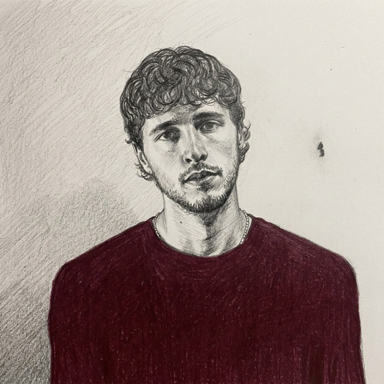

me
Hi, I'm Jake.
I'm a growth marketer and musician in New York. Partner at Mercer Ads, a creative agency for paid ads, and CEO of FloWave.
I make music as Pulyay.

I'm a growth marketer and musician in New York. Partner at Mercer Ads, a creative agency for paid ads, and CEO of FloWave.
I make music as Pulyay.